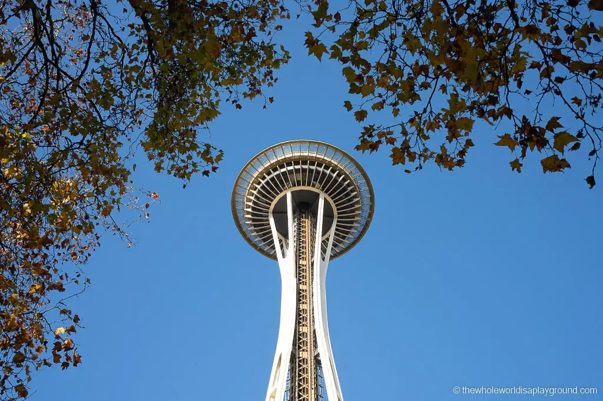
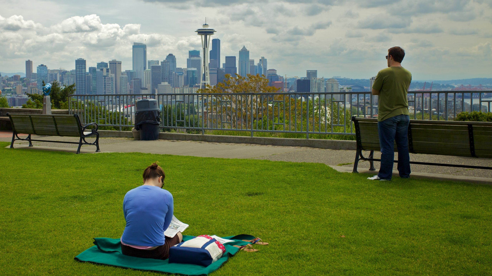
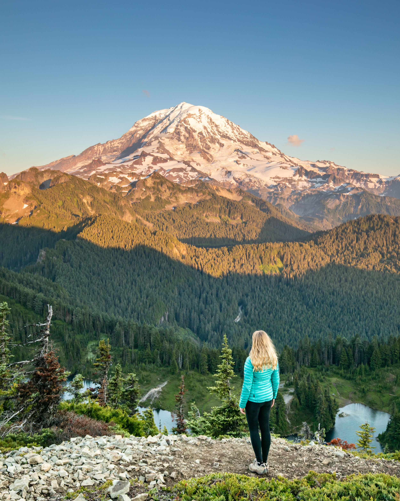
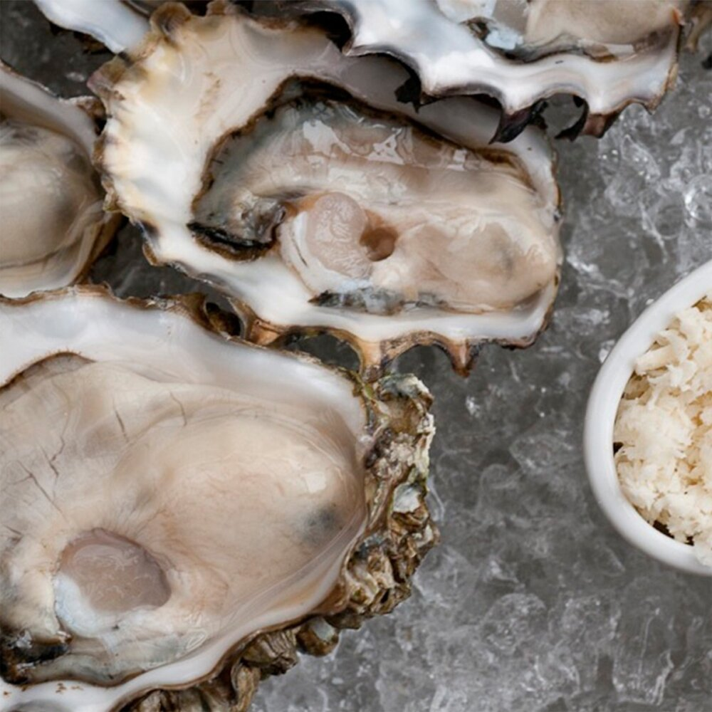
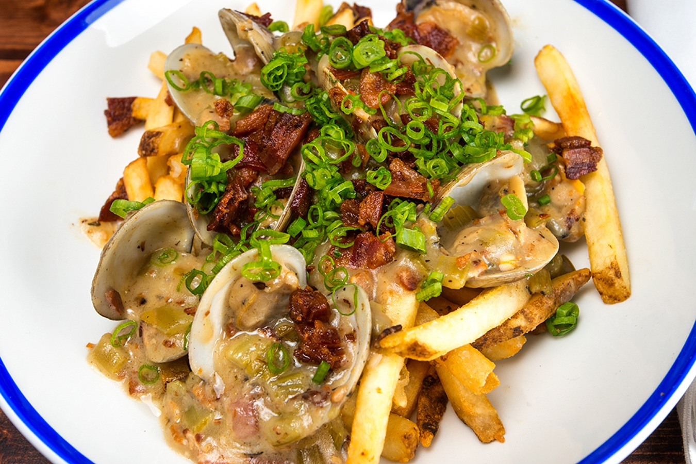

1: The Space Needle
|  | The Space Needle was built for the 1962 World's Fair and has become a Seattle icon, an instantly recognizable Seattle landmark. Watchtower can be seen from all over Seattle and has appeared in countless movies and shows including Frazier, Austin Powers and Grey's Anatomy. |
|---|
2: The Space Needle
|  | Kerry Park is a small park located in the Queen Anne neighborhood of Seattle.It’s one of the best places to get a view of downtown Seattle and Mount Rainier; the perfect location to watch the sunset and enjoy panoramic views of the city.The views from Kerry Park are especially stunning at night when the city lights are shining. |
|---|
3: Mount Rainier
|  | Mount Rainier is one of the most popular tourist destinations in Washington State and for good reason.A towering, massive mountain that dominates Seattle’s skyline, the views from Mount Rainier are absolutely breathtaking.On a clear day, you can see all the way to Canada!If you want to experience something truly awe-inspiring, head up to this peak and enjoy 360-degree views of both Seattle and Tacoma. |
|---|
4: Oysters
|  | Ballard If there’s a single, precious food pulled from our nearby waters that epitomizes Pacific Northwest flavor, it’s the oyster. And this tucked-away bar is, quite simply, the greatest place to enjoy them (market price). “What can I say, it’s just the best. I send everyone there. There are lots of places to get oysters in town, but they do them right: beautifully shucked in just a magical little place. While you’re there, you might as well get the tartare, sardines and fried oysters, too!” Zoi Antonitsas, chef at soon-to-open Pike Place Market restaurant Little Fish |
|---|
5: Chicken teriyaki
 |
Mill Creek Alongside pho, teriyaki is Seattle’s comfort food, and many foodies credit its origin story to Toshi Kasahara, who opened the first Toshi’s Teriyaki on Lower Queen Anne in 1976. Now, the Toshi’s restaurants throughout the region are owned and operated by others, except at this unassuming strip mall location. There, you’ll find master Kasahara himself grilling tender chicken thighs and slathering them with his proprietary marinade. The beauty of the chicken teriyaki ($7.95) here is in the details: juicy meat, just enough sauce, a pile of rice and the coleslaw that ties it all together. |
|---|
6: Seafood chowder
|  | South Lake Union Boston can keep its clams: This is how the Pacific Northwest does chowder, with big chunks of potato, gobs of bacon and plenty of local seafood. The chunky chowder ($15 at dinner) comes stuffed with a rotating selection of local creatures—some days it’s salmon, on other days it’s rockfish or Dungeness crab—and showered with snipped chives. The warm, bacon-scented hug of this hearty bowl of seafood, from this spot on the southeast shores of Lake Union, will be what tows the town through the dark winter months, while the stunning views of the lake and the Seattle skyline—from the restaurant or, in summer, the patio—remind us all of why we live here. |
|---|